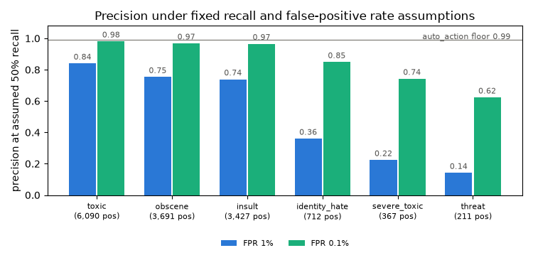

Baseline：把实验封装成一条可重跑的命令
先把数据划分、模型训练、路由和仿真连成可重跑的流程。复现时需要相同的数据、代码、配置和依赖环境；这些信息随运行保存。
本页记录第一步的实现。R103 当时仍启用，后来已移除；真实数据结果和后续改动见第二步。下文也修正了早期对精确率算例的过度解释。
起点：项目脚手架
起点是政策文件加载器、评分行过滤和一组类别比例算例。Jigsaw 的 test.csv 有 153,164 行，其中 63,978 行有评分标签，其余标签为 -1，不参与评估。
下表固定召回率为 50%，再分别假设 FPR 为 1% 和 0.1%。精确率按 TP / (TP + FP) 计算，其中 TP = 阳性数 × 召回率，FP = 阴性数 × FPR。
| 标签 | 阳性 | 阴性 | 精确率，FPR 1% | 精确率，FPR 0.1% |
|---|---|---|---|---|
| toxic | 6,090 | 57,888 | 0.840 | 0.981 |
| obscene | 3,691 | 60,287 | 0.754 | 0.968 |
| insult | 3,427 | 60,551 | 0.739 | 0.966 |
| identity_hate | 712 | 63,266 | 0.360 | 0.849 |
| severe_toxic | 367 | 63,611 | 0.224 | 0.743 |
| threat | 211 | 63,767 | 0.142 | 0.623 |

这些算例说明，稀有标签的精确率对假阳性尤其敏感。因此，评估需要检查实际阈值下的精确率和覆盖率，不能仅凭 ROC-AUC 判断自动处置是否可靠。
实验协议
| 部分 | 行数 | 职责 | 为什么这样分 |
|---|---|---|---|
| train | 95,743 | 学词表，训练六个分类器 | 基础模型只在这部分训练 |
| calib | 31,914 | Platt 校准 | 用独立数据的预测分数和标签拟合概率映射 |
| thresh，选择集 | 31,914 | 选择路由阈值 | 避免在模型训练数据上评价候选阈值 |
| scored test | 63,978 | 评估冻结后的流程 | 不参与本次模型、校准器和路由阈值拟合 |
先声明政策目标，再选择满足目标、覆盖最多评论的阈值。自动处置直接产生执行结果，因此目标设为 0.99，人工审核设为 0.90。这是政策选择，并非由实测错误成本推导出的最优值。至少 30 条只是小样本过滤条件，不能证明真实精确率达到 99%。
这几部分数据互不重叠，但官方测试行已用于多轮结果分析。它现在是迭代诊断基准；后续改进需要新的独立评估数据。
严重度权重是政策输入，不是测量：threat 10，identity_hate 6，severe_toxic 5，insult 2，obscene 2，toxic 1。仿真里的"危害"是命中标签的最高权重，它是实验里的危害代理，不能称为真实业务中减少的伤害。
政策文件里的三条规则（baseline 时的写法）
- R101：当
p_threat ≥ 0.30时转人工，可覆盖模型原先的任一层级。这是针对高危预测的政策选择，不能用上面的算例证明它是唯一可行方案。 - R102：当模型同时给出
p_severe_toxic ≥ 0.50和p_toxic < 0.50时转人工。它标记违反训练标签包含关系的预测，不能单独证明输入来自分布外。 - R103：含身份词且
p_max < 0.95时转人工。原意是避免自动误处置，实际作用在第二步中重新检查。
R103 的历史配置，现已退役
- id: R103_identity_term_low_confidence
description: >
The documented failure mode on this corpus is false positives on benign
identity mentions. Suppress auto-action in the borderline band so
over-enforcement does not concentrate on one group; a human decides.
action: human_review
conditions:
- {signal: identity_term_present, op: "==", threshold: 1}
- {signal: p_max, op: "<", threshold: 0.95}门槛（回归检查）
门槛写在政策文件里。未设置门槛或未指定评估报告时，相关测试跳过；显式指定的报告不存在时，测试失败。代码 CI 通过不等于真实数据上的评估要求全部通过。
第二步根据实测值设置回归检查范围，用来发现退步。自动处置 0.99 等事先声明的政策要求单独保留。
产物
一次运行写出：manifest.json（数据哈希、各组标签计数、commit、依赖版本、种子）、splits.csv、thresholds.json、model.pkl、predictions.csv（逐条）、report.json（门槛读它）、report.md。
先在合成数据上跑通
真实数据当时不在机器上，先用一个和 Jigsaw 文件布局相同的合成语料（scripts/make_synthetic_corpus.py，含 -1 未评分行以检验过滤）把全链路跑通。合成数据的数字只用来检查流水线，不作为结果。这一步在合成数据上就暴露了 R103 的问题：它把大量良性 identity 提及推进了人工队列。
这一步交付了什么
第一步交付了可重跑的实验命令、逐条预测记录，以及在相同审核资源下比较三种排序策略的流程。合成语料只验证代码路径，效果判断留给真实数据实验。